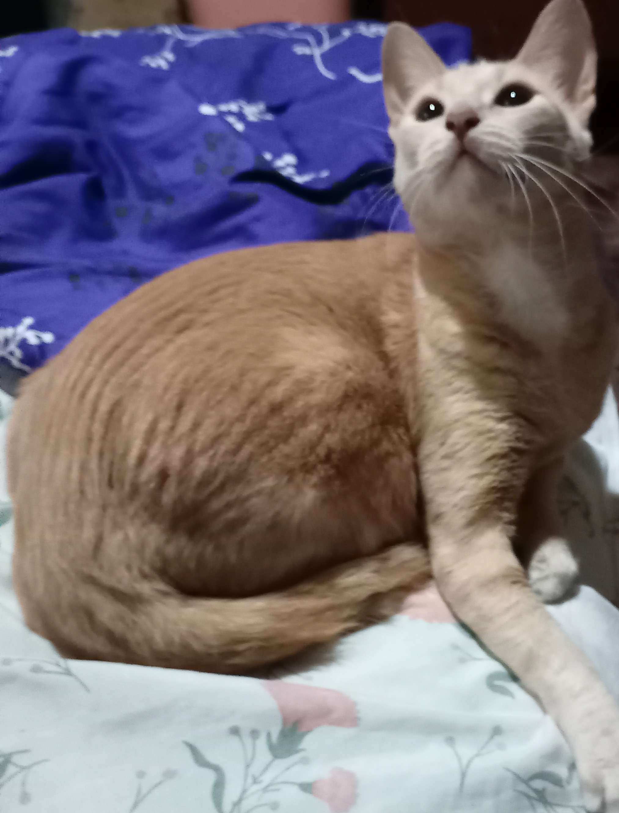
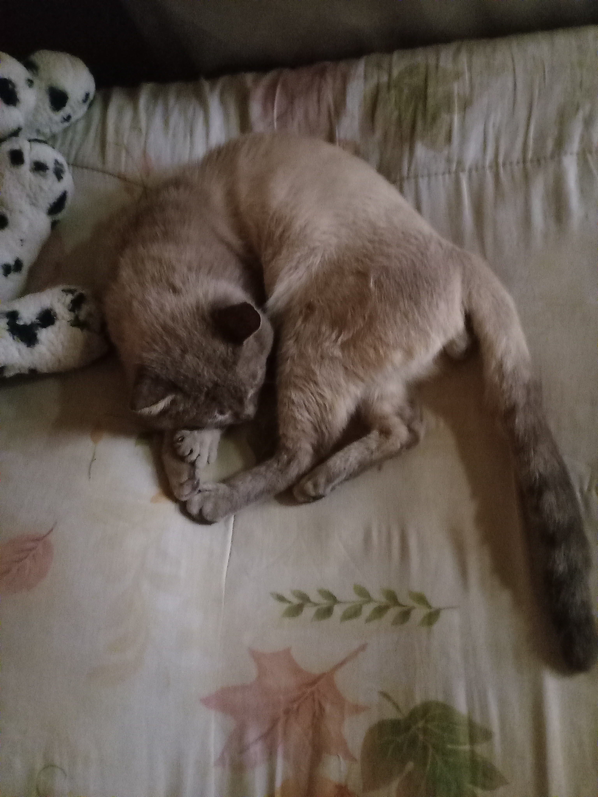

Kitty
No se sabe exactamente aobre su fecha de nacimiento, pero está entre enero y marzo del año 2022, por lo que tiene mpas de un año. Es una gatita hiperactiva de color narajna, con carita pequeña y fina, ojos grandes, nariz rosada, orejitas grandes.
Kitty fue adoptada en diciemnbre de 2022, ya esterilizada. Para llevar a la gatita a mi casa, fue complicado debido a que el viaje desde donde vivió la gatita hasta mi casa (incluyendo la congestión vehicular) fueron de más de tres horas. Añadiendo el calor sofocante que se sentía dentro del miniván y que la gatita tenía miedo (tuve que acariciarla en todo el viaje para que se sienta mejor). Al llegar a mi casa, Kitty tenía miedo porque no conoce la casa; pero pasando un día, la gatita se sintió más cómoda y empezó a recorrer por toda la casa y, a la vez, a dejar de estar a la guardia, dejándose acariciar por todos los que vivimos en la casa.
Una vez desenvuelta en casa, Kitty empezó a hacer travesuras como por ejemplo: Subirse en los sitios elevados de la casa como cómodas, libreros, roperos; botar las cosas hacia el suelo, usando sólo sus patitas delanteras; jugar con cualquier cosa que sea pitas (pasadores, saltasogas, pabilos); jugar con los insectos que pasaban por mi casa como por ejemplo, las cucarachas (les encanta dejar volteadas); jugar y bañar a Shaggy.
Shaggy
Shaggy es un gatito siamés claro que se encontraba abandonado en un puente colgante. Para ese entonces, se sospechaba que tenia un mes de nacido, estaba muy desnutrido y algo maltratado. Mi padre lo llevó entre sus manos hacia mi casa; sin que el gatito proteste o haga algún ruido o se sienta incómodo. El día que llegó el gatito a mi casa fue el 11 de agosto de 2016. Actualmente tiene más de siete años, pero no deja de comer bastante.
Al gatito le encanta salir a la calle, pero no le gusta comer por allí, sino en casa. Es muy travieso cuando se trata de buscar comida (lamentablemente llega a robar comidas con carne), le gusta jugar de vez en cuando a la pita o perseguir insectos como cucarachas. Pero le encanta acompañarme (ahora junto con Kitty) cuando tengo trabajos y tareas. Ambos suelen dormir conmigo y les encantan ser acariciados.
Shaggy es un gatito que, desde bebe, ha sido muy leal a la familia, además de que le encanta hacer reclamos para solicitar comida, abrir la puerta, jugar (mucho demanda, pero lo bueno es que se deja notar). También le encanta ser sobón para tener comida adicional.
